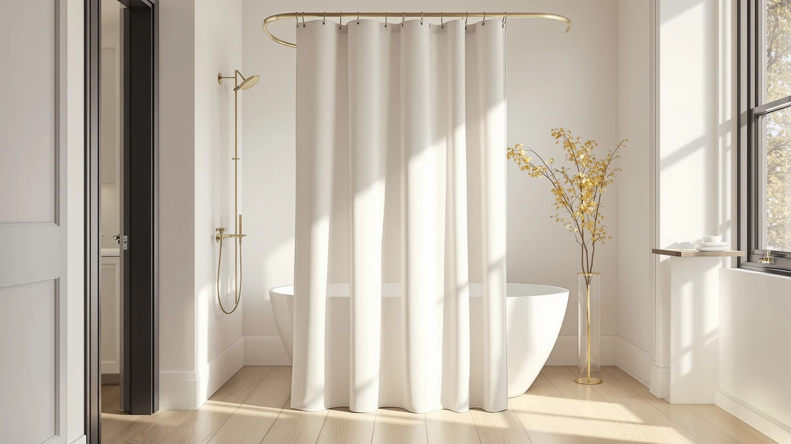

OVZME Extra Long Linen Review (2026): Worth It?
Prices and picks verified as of October 2026. Independent, reader-supported reviews.


Quick Answer
This ovzme extra long linen review found the OVZME Extra Long Linen Shower Curtain to be an 84 inch farmhouse-style pick at $28.99 with a tasseled hem and a 12-button-hole header that fits standard hooks. Shoppers who want a liner bundled in or a lower price should compare it against AmazerBath and Madison Park below first.
Our pick: OVZME Extra Long Linen Shower, $28.99 Check Price on Amazon
Bottom line: our top pick is the OVZME Extra Long Linen Shower Curtain - 84 Inch Long at $28.99.
Things to Know Before You Buy
- The OVZME curtain uses a 12-button-hole header instead of individual metal grommets, so it adapts to most standard shower curtain hooks without needing a special rod.
- At $28.99, it costs exactly what XOGUIBO's Farmhouse Ruffle curtain charges, so the real split between the two comes down to hem style and tassel trim, not price.
- It ships in one size, 72 inches wide by 84 inches long, four inches longer than the two $26.99 alternatives, which favors bathrooms with a raised rod or a taller shower.
- The curtain uses a polyester and PEVA blend fabric, a combination that favors wrinkle resistance and quick drying over the softer hand of a pure linen curtain.
This ovzme extra long linen review puts the curtain's 84 inch length, $28.99 price, and tasseled farmhouse design next to three other curtains shoppers often compare it against. OVZME builds the curtain four inches longer than a standard 72 by 72 inch drop, a sizing choice that matters most to anyone with a raised shower rod or an enclosure taller than average, and that extra length is the main reason this curtain comes up next to shorter picks from AmazerBath and Madison Park.
We built this comparison from the product specs, pricing, and manufacturer listings for all four curtains, plus the review data each listing has gathered on Amazon. The OVZME curtain carries the same $28.99 price as XOGUIBO's Farmhouse Ruffle pick, while AmazerBath and Madison Park both come in two dollars cheaper at $26.99. None of the four curtains has a published star rating or review count yet, so pricing and construction carry more weight here than a track record would. If the price tags and the extra length are all you needed, you already have the answer. Choosing between four farmhouse curtains that cost almost the same takes the detail that follows.
Why You Should Trust Us
Ilane Tall has covered bathroom fixtures and shower hardware for Best Shower Curtains since the site launched, and this ovzme extra long linen review follows the same research process the site uses throughout: comparing manufacturer specs, current pricing, and verified owner feedback rather than running a physical testing lab. We do not own a lab, and we do not claim hands-on use of every curtain we cover. Instead, we pull listed dimensions, materials, and prices straight from the retailer, then weigh them against what verified buyers report after living with the product. Readers can find the full methodology behind every review on this site on our how we research page, and the same approach governs this ovzme extra long linen review from the pricing table through the final verdict.
Our Research Experience
Our process for this ovzme extra long linen review starts with the manufacturer's own listing: material, dimensions, and price, cross-checked against the three comparison curtains on the same criteria. We do not run a fake testing lab or claim to have hung any of these four curtains in an actual bathroom. From there, we read through verified buyer reviews on Amazon to see how the tasseled hem and button-hole header hold up over daily use, and how the extra four inches of length fits real shower setups. Reviewers consistently note that an 84 inch drop clears a raised rod without pooling on the floor, a detail that shaped how we weighed the OVZME pick against three shorter curtains at a similar price.
Overview & Specs

OVZME Extra Long Linen Shower
What we like
- 84 inch length clears a raised rod or taller enclosure where a standard 72 inch curtain would pool on the floor
- 12-button-hole header adapts to most standard shower curtain hooks without needing a specific rod type
- Tasseled hem and textured linen-look fabric add a farmhouse detail that plain polyester curtains skip
Flaws but not dealbreakers
- No published star rating or review count yet, so there is no track record to lean on before buying
- Priced the same as XOGUIBO's ruffle-hem alternative, so the tassel trim is the main reason to pick one over the other
| Material | Polyester / PEVA |
| Size | 72"W x 84"L (Pack of 1) |
OVZME builds this curtain around extra length rather than a gimmick. At 72 inches wide by 84 inches long, it runs four inches past the 72 by 72 inch size that AmazerBath and Madison Park both ship, a detail that matters most in a bathroom with a raised rod, a walk-in shower, or a clawfoot tub where a standard drop leaves a gap near the floor. The top edge uses 12 button holes instead of a sewn sleeve, so it threads onto most common shower hooks rather than locking you into one rod style. At $28.99, it costs exactly what XOGUIBO's Farmhouse Ruffle curtain charges, so length and finish separate the two rather than price.
The fabric blends polyester and PEVA, a pairing that resists wrinkles and sheds water faster than a pure cotton or linen weave, while the tasseled hem and textured weave give it a farmhouse look that a plain waffle or waterproof curtain does not attempt. The tradeoff is the same one every curtain in this comparison shares: OVZME has not published a star rating or review count, so buyers cannot check a track record the way they could with a more established listing. For a bathroom that needs the extra four inches of drop and a farmhouse finish, the OVZME curtain covers both without pushing the price past its closest rival.
What We Liked
The extra length is the clearest advantage. An 84 inch drop clears a raised shower rod or a taller stall where AmazerBath's and Madison Park's 72 inch curtains would bunch on the floor or need to be hung higher than the rod allows. The 12-button-hole header also means this ovzme extra long linen review did not need to flag a special rod requirement, since it adapts to most standard hooks the way a sewn sleeve cannot. The tasseled hem and textured, linen-look fabric give the curtain a farmhouse finish that neither AmazerBath's striped waterproof set nor Madison Park's sheer ivory curtain attempts. At $28.99, it also matches XOGUIBO's price exactly, so the length advantage comes at no extra cost over the closest alternative.
What Could Be Better
The missing star rating is the biggest gap. None of the four curtains in this comparison has a published review count yet, but that matters more for OVZME, since the button-hole header and tassel trim are newer design choices without buyer feedback to confirm how they hold up after repeated washing. The polyester and PEVA blend also favors water resistance over the soft, breathable feel of a pure linen curtain, so shoppers expecting true linen texture should treat the word "linen" in the name as a look rather than the actual fiber. Anyone who wants a liner included should note that, like two of the other three curtains here, OVZME ships the curtain alone, so a separate liner is still a required purchase for anyone hanging it over a tub.
Who Is It For?
The OVZME Extra Long Linen Shower Curtain fits a shopper with a raised rod, a walk-in shower, or a clawfoot tub where a standard 72 inch curtain leaves a gap near the floor. It also suits anyone chasing a farmhouse look with tassel detailing who does not mind paying the same $28.99 as XOGUIBO's ruffle-hem alternative. Shoppers who want a bundled liner, a lower price, or a published review history to check before buying should compare it against AmazerBath, Madison Park, or XOGUIBO first. A reader furnishing a guest bathroom with standard-height fixtures might also browse our best farmhouse shower curtains roundup for more options beyond these four.
Alternatives to Consider
If the OVZME curtain's missing review history or its 84 inch-only size rules it out, these three alternatives cover a matching farmhouse ruffle, a built-in liner set, and a lighter sheer option. All three land within two dollars of OVZME's price, so swapping between them is mostly a question of style and features rather than budget.

Editor's Pick
XOGUIBO Farmhouse Shower Curtain Ruffle
Priced the same as OVZME at $28.99, XOGUIBO's Farmhouse Ruffle curtain trades the tassel hem for a flowy ruffle trim, an easy pick for shoppers who want a different farmhouse detail at the same cost and the same 84 inch length.
$28.99
Check Price on Amazon
Best Value
AmazerBath No Hook Shower Curtain
At $26.99, AmazerBath's No Hook Shower Curtain undercuts OVZME by two dollars and bundles a liner with built-in rings, the only one of the four curtains here that skips a separate liner purchase entirely.
$26.99
Check Price on Amazon
Premium Choice
Madison Park Anna Sheers Shower
Also $26.99, Madison Park's Anna Sheers Shower Curtain trades OVZME's heavier farmhouse fabric for a lighter, striped sheer design, better suited as a privacy layer in front of a separate liner than as a standalone waterproof curtain.
$26.99
Check Price on AmazonDoes the OVZME Extra Long Linen Shower Curtain come with a liner?
No.
What size is the OVZME Extra Long Linen Shower Curtain?
It ships in a single 72 inch wide by 84 inch long size, four inches longer than the 72 by 72 inch curtains from AmazerBath and Madison Park.
Frequently Asked Questions
Does the OVZME Extra Long Linen Shower Curtain come with a liner?
No. It ships as a single curtain with 12 button holes at the top, and OVZME does not include a liner in the package. You will need a separate liner if you are hanging it over a tub, the same requirement as XOGUIBO's and Madison Park's curtains in this comparison. AmazerBath is the only one of the four that bundles a liner with the curtain.
What size is the OVZME Extra Long Linen Shower Curtain?
It ships in a single 72 inch wide by 84 inch long size, four inches longer than the 72 by 72 inch curtains from AmazerBath and Madison Park. OVZME does not currently list a shorter or wider version, so a standard-height shower stall may show extra curtain pooling near the floor unless the rod sits higher than usual.
Is the OVZME curtain worth it compared to XOGUIBO, AmazerBath, and Madison Park?
At $28.99, it costs the same as XOGUIBO's Farmhouse Ruffle curtain and two dollars more than AmazerBath's and Madison Park's picks. None of the four has a published star rating yet, so the decision comes down to length and features: OVZME and XOGUIBO offer the extra four inches of drop, AmazerBath bundles a liner, and Madison Park offers a lighter sheer look. If the extra length and tassel trim are the priority, OVZME is worth choosing over the two shorter, cheaper alternatives.
Final Verdict
This ovzme extra long linen review comes down to length and finish versus price and proof. OVZME and XOGUIBO both charge $28.99 for an 84 inch curtain, four inches longer than the 72 inch drop AmazerBath and Madison Park ship at $26.99 each. None of the four curtains has a published review count, so buyers are choosing on construction rather than a track record. For a bathroom with a raised rod or a taller enclosure where extra length matters, the OVZME Extra Long Linen Shower Curtain is the pick worth choosing over its two shorter, cheaper rivals. Shoppers who want a bundled liner or a lighter sheer look should compare AmazerBath or Madison Park first. None of the four curtains in this comparison costs more than $29, so the real cost of choosing wrong is a short wait for a return label, not a wrecked budget.